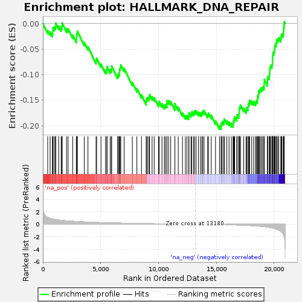
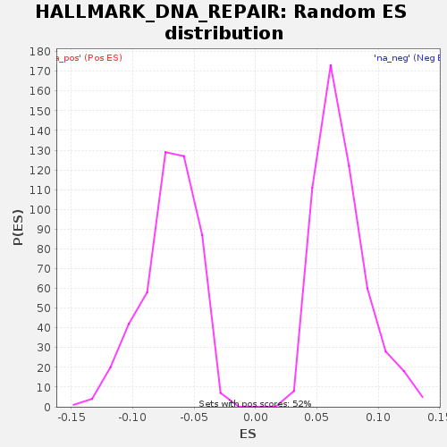

| | | Dataset | GSE18198_base_collapsed |
| Phenotype | NoPhenotypeAvailable |
| Upregulated in class | na_neg |
| GeneSet | HALLMARK_DNA_REPAIR |
| Enrichment Score (ES) | -0.2070937 |
| Normalized Enrichment Score (NES) | -2.944087 |
| Nominal p-value | 0.0 |
| FDR q-value | 0.0 |
| FWER p-Value | 0.0 |
Table: GSEA Results Summary

Fig 1: Enrichment plot: HALLMARK_DNA_REPAIR
Profile of the Running ES Score & Positions of GeneSet Members on the Rank Ordered List
| SYMBOL | TITLE | RANK IN GENE LIST | RANK METRIC SCORE | RUNNING ES | CORE ENRICHMENT | | 1 | ARL6IP1 | NA | 418 | 1.127 | -0.0134 | No |
| 2 | EIF1B | NA | 625 | 0.963 | -0.0166 | No |
| 3 | TK2 | NA | 822 | 0.865 | -0.0193 | No |
| 4 | GUK1 | NA | 852 | 0.852 | -0.0140 | No |
| 5 | VPS37D | NA | 876 | 0.846 | -0.0084 | No |
| 6 | POLR3GL | NA | 993 | 0.804 | -0.0072 | No |
| 7 | POLD4 | NA | 1093 | 0.769 | -0.0053 | No |
| 8 | MPC2 | NA | 1110 | 0.763 | 0.0007 | No |
| 9 | SDCBP | NA | 1365 | 0.686 | -0.0048 | No |
| 10 | RALA | NA | 1580 | 0.637 | -0.0084 | No |
| 11 | POLA2 | NA | 1644 | 0.622 | -0.0047 | No |
| 12 | TAF13 | NA | 1666 | 0.618 | 0.0010 | No |
| 13 | STX3 | NA | 2048 | 0.549 | -0.0106 | No |
| 14 | SNAPC5 | NA | 2177 | 0.534 | -0.0101 | No |
| 15 | POLB | NA | 2579 | 0.481 | -0.0227 | No |
| 16 | GTF2A2 | NA | 2891 | 0.445 | -0.0309 | No |
| 17 | SMAD5 | NA | 2909 | 0.444 | -0.0250 | No |
| 18 | GTF2H3 | NA | 2930 | 0.443 | -0.0192 | No |
| 19 | GTF2H5 | NA | 2986 | 0.439 | -0.0152 | No |
| 20 | POLH | NA | 3583 | 0.376 | -0.0371 | No |
| 21 | COX17 | NA | 3898 | 0.353 | -0.0455 | No |
| 22 | SAC3D1 | NA | 4601 | 0.298 | -0.0726 | No |
| 23 | POLR2J | NA | 4650 | 0.294 | -0.0681 | No |
| 24 | CSTF3 | NA | 5025 | 0.269 | -0.0794 | No |
| 25 | DUT | NA | 5418 | 0.248 | -0.0916 | No |
| 26 | POLR2K | NA | 5540 | 0.241 | -0.0907 | No |
| 27 | BOLA2 | NA | 5544 | 0.241 | -0.0841 | No |
| 28 | RBX1 | NA | 5820 | 0.225 | -0.0906 | No |
| 29 | NUDT21 | NA | 5919 | 0.220 | -0.0886 | No |
| 30 | PDE4B | NA | 5949 | 0.219 | -0.0833 | No |
| 31 | ELOA | NA | 6459 | 0.194 | -0.1010 | No |
| 32 | TARBP2 | NA | 6542 | 0.190 | -0.0983 | No |
| 33 | DCTN4 | NA | 6618 | 0.187 | -0.0952 | No |
| 34 | DGCR8 | NA | 6633 | 0.187 | -0.0891 | No |
| 35 | GTF2F1 | NA | 6690 | 0.184 | -0.0851 | No |
| 36 | PCNA | NA | 6737 | 0.183 | -0.0806 | No |
| 37 | HPRT1 | NA | 7029 | 0.171 | -0.0879 | No |
| 38 | POLL | NA | 7739 | 0.144 | -0.1153 | No |
| 39 | GMPR2 | NA | 8130 | 0.130 | -0.1273 | No |
| 40 | ELL | NA | 8527 | 0.116 | -0.1396 | No |
| 41 | RAD52 | NA | 8935 | 0.103 | -0.1525 | No |
| 42 | CDA | NA | 8962 | 0.102 | -0.1470 | No |
| 43 | SURF1 | NA | 9055 | 0.100 | -0.1447 | No |
| 44 | ERCC2 | NA | 9181 | 0.097 | -0.1440 | No |
| 45 | ERCC8 | NA | 9221 | 0.096 | -0.1392 | No |
| 46 | TAF10 | NA | 9446 | 0.089 | -0.1433 | No |
| 47 | CANT1 | NA | 9628 | 0.083 | -0.1453 | No |
| 48 | GTF2H1 | NA | 9998 | 0.073 | -0.1563 | No |
| 49 | RFC5 | NA | 10060 | 0.071 | -0.1525 | No |
| 50 | SUPT5H | NA | 10301 | 0.065 | -0.1573 | No |
| 51 | DAD1 | NA | 10504 | 0.059 | -0.1603 | No |
| 52 | NT5C3A | NA | 10606 | 0.056 | -0.1585 | No |
| 53 | POLR2A | NA | 10731 | 0.053 | -0.1577 | No |
| 54 | RAE1 | NA | 10736 | 0.053 | -0.1512 | No |
| 55 | POLR2C | NA | 10873 | 0.049 | -0.1510 | No |
| 56 | POLR2G | NA | 11054 | 0.044 | -0.1530 | No |
| 57 | FEN1 | NA | 11415 | 0.036 | -0.1636 | No |
| 58 | DGUOK | NA | 11418 | 0.036 | -0.1570 | No |
| 59 | EDF1 | NA | 11710 | 0.029 | -0.1642 | No |
| 60 | POLD3 | NA | 12075 | 0.022 | -0.1750 | No |
| 61 | ALYREF | NA | 12325 | 0.018 | -0.1803 | No |
| 62 | CETN2 | NA | 12465 | 0.015 | -0.1803 | No |
| 63 | POLR2F | NA | 12619 | 0.011 | -0.1809 | No |
| 64 | ADA | NA | 12633 | 0.011 | -0.1748 | No |
| 65 | BCAM | NA | 12810 | 0.008 | -0.1766 | No |
| 66 | TYMS | NA | 12875 | 0.006 | -0.1729 | No |
| 67 | PDE6G | NA | 13027 | 0.003 | -0.1735 | No |
| 68 | POLR1D | NA | 13120 | 0.001 | -0.1712 | No |
| 69 | LIG1 | NA | 13248 | -0.001 | -0.1706 | No |
| 70 | MPG | NA | 13448 | -0.005 | -0.1735 | No |
| 71 | GPX4 | NA | 13624 | -0.009 | -0.1752 | No |
| 72 | CLP1 | NA | 13747 | -0.012 | -0.1743 | No |
| 73 | SUPT4H1 | NA | 13832 | -0.013 | -0.1716 | No |
| 74 | TAF1C | NA | 13943 | -0.015 | -0.1702 | No |
| 75 | POM121 | NA | 14243 | -0.022 | -0.1779 | No |
| 76 | AGO4 | NA | 14331 | -0.023 | -0.1754 | No |
| 77 | BCAP31 | NA | 14561 | -0.028 | -0.1796 | No |
| 78 | ADCY6 | NA | 14933 | -0.039 | -0.1908 | No |
| 79 | CCNO | NA | 15273 | -0.051 | -0.2004 | No |
| 80 | RRM2B | NA | 15414 | -0.056 | -0.2004 | Yes |
| 81 | ERCC4 | NA | 15440 | -0.056 | -0.1949 | Yes |
| 82 | NPR2 | NA | 15519 | -0.058 | -0.1919 | Yes |
| 83 | TMED2 | NA | 15650 | -0.066 | -0.1915 | Yes |
| 84 | TSG101 | NA | 15688 | -0.067 | -0.1865 | Yes |
| 85 | ERCC5 | NA | 15910 | -0.078 | -0.1904 | Yes |
| 86 | NFX1 | NA | 16101 | -0.085 | -0.1929 | Yes |
| 87 | ZNF707 | NA | 16305 | -0.095 | -0.1959 | Yes |
| 88 | NELFE | NA | 16453 | -0.101 | -0.1963 | Yes |
| 89 | POLE4 | NA | 16473 | -0.103 | -0.1905 | Yes |
| 90 | UPF3B | NA | 16535 | -0.106 | -0.1867 | Yes |
| 91 | SNAPC4 | NA | 16587 | -0.109 | -0.1824 | Yes |
| 92 | RFC2 | NA | 16771 | -0.118 | -0.1845 | Yes |
| 93 | RFC3 | NA | 16800 | -0.119 | -0.1791 | Yes |
| 94 | NELFB | NA | 16936 | -0.128 | -0.1789 | Yes |
| 95 | DDB2 | NA | 16976 | -0.130 | -0.1741 | Yes |
| 96 | POLR2D | NA | 16983 | -0.131 | -0.1677 | Yes |
| 97 | GTF3C5 | NA | 17023 | -0.133 | -0.1628 | Yes |
| 98 | UMPS | NA | 17097 | -0.138 | -0.1596 | Yes |
| 99 | VPS28 | NA | 17372 | -0.160 | -0.1661 | Yes |
| 100 | XPC | NA | 17572 | -0.176 | -0.1689 | Yes |
| 101 | ERCC3 | NA | 17628 | -0.180 | -0.1649 | Yes |
| 102 | AK1 | NA | 17735 | -0.189 | -0.1633 | Yes |
| 103 | PRIM1 | NA | 17763 | -0.193 | -0.1579 | Yes |
| 104 | REV3L | NA | 17837 | -0.200 | -0.1547 | Yes |
| 105 | TAF12 | NA | 17884 | -0.204 | -0.1502 | Yes |
| 106 | AK3 | NA | 18061 | -0.222 | -0.1519 | Yes |
| 107 | POLD1 | NA | 18227 | -0.239 | -0.1531 | Yes |
| 108 | CMPK2 | NA | 18389 | -0.258 | -0.1542 | Yes |
| 109 | VPS37B | NA | 18461 | -0.268 | -0.1509 | Yes |
| 110 | GTF2B | NA | 18558 | -0.281 | -0.1488 | Yes |
| 111 | RAD51 | NA | 18566 | -0.282 | -0.1424 | Yes |
| 112 | ERCC1 | NA | 18634 | -0.294 | -0.1389 | Yes |
| 113 | RPA3 | NA | 18655 | -0.296 | -0.1331 | Yes |
| 114 | NUDT9 | NA | 18736 | -0.309 | -0.1303 | Yes |
| 115 | RFC4 | NA | 18816 | -0.321 | -0.1274 | Yes |
| 116 | ZWINT | NA | 18928 | -0.341 | -0.1260 | Yes |
| 117 | TP53 | NA | 19027 | -0.363 | -0.1240 | Yes |
| 118 | RNMT | NA | 19134 | -0.383 | -0.1224 | Yes |
| 119 | POLR2I | NA | 19137 | -0.384 | -0.1158 | Yes |
| 120 | USP11 | NA | 19152 | -0.387 | -0.1097 | Yes |
| 121 | POLR2H | NA | 19414 | -0.448 | -0.1156 | Yes |
| 122 | BRF2 | NA | 19423 | -0.452 | -0.1092 | Yes |
| 123 | GSDME | NA | 19437 | -0.456 | -0.1031 | Yes |
| 124 | ADRM1 | NA | 19582 | -0.498 | -0.1034 | Yes |
| 125 | SF3A3 | NA | 19599 | -0.503 | -0.0974 | Yes |
| 126 | SSRP1 | NA | 19626 | -0.510 | -0.0920 | Yes |
| 127 | SEC61A1 | NA | 19639 | -0.516 | -0.0858 | Yes |
| 128 | AAAS | NA | 19702 | -0.537 | -0.0821 | Yes |
| 129 | TAF9 | NA | 19811 | -0.582 | -0.0806 | Yes |
| 130 | POLR3C | NA | 19852 | -0.594 | -0.0758 | Yes |
| 131 | ITPA | NA | 19860 | -0.597 | -0.0694 | Yes |
| 132 | HCLS1 | NA | 19871 | -0.603 | -0.0632 | Yes |
| 133 | NME4 | NA | 19895 | -0.613 | -0.0576 | Yes |
| 134 | SRSF6 | NA | 19983 | -0.648 | -0.0550 | Yes |
| 135 | POLR2E | NA | 20028 | -0.672 | -0.0504 | Yes |
| 136 | PNP | NA | 20052 | -0.688 | -0.0448 | Yes |
| 137 | TAF6 | NA | 20105 | -0.716 | -0.0406 | Yes |
| 138 | NME3 | NA | 20184 | -0.768 | -0.0377 | Yes |
| 139 | NT5C | NA | 20214 | -0.788 | -0.0324 | Yes |
| 140 | NCBP2 | NA | 20315 | -0.864 | -0.0304 | Yes |
| 141 | POLA1 | NA | 20402 | -0.946 | -0.0279 | Yes |
| 142 | NELFCD | NA | 20580 | -1.143 | -0.0297 | Yes |
| 143 | APRT | NA | 20609 | -1.178 | -0.0243 | Yes |
| 144 | RPA2 | NA | 20665 | -1.270 | -0.0202 | Yes |
| 145 | POLR1C | NA | 20792 | -1.565 | -0.0196 | Yes |
| 146 | NME1 | NA | 20806 | -1.601 | -0.0135 | Yes |
| 147 | DDB1 | NA | 20834 | -1.747 | -0.0081 | Yes |
| 148 | MRPL40 | NA | 20861 | -1.997 | -0.0026 | Yes |
| 149 | IMPDH2 | NA | 20874 | -2.044 | 0.0035 | Yes |
Table: GSEA details [plain text format]

Fig 2: HALLMARK_DNA_REPAIR: Random ES distribution
Gene set null distribution of ES for HALLMARK_DNA_REPAIR